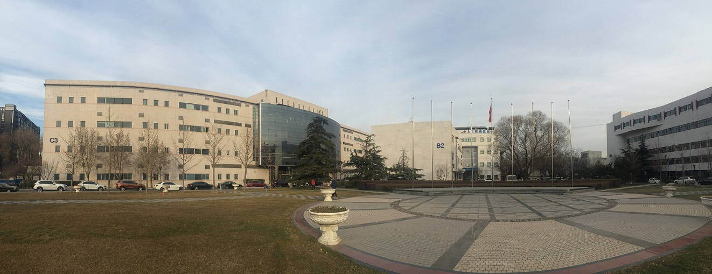
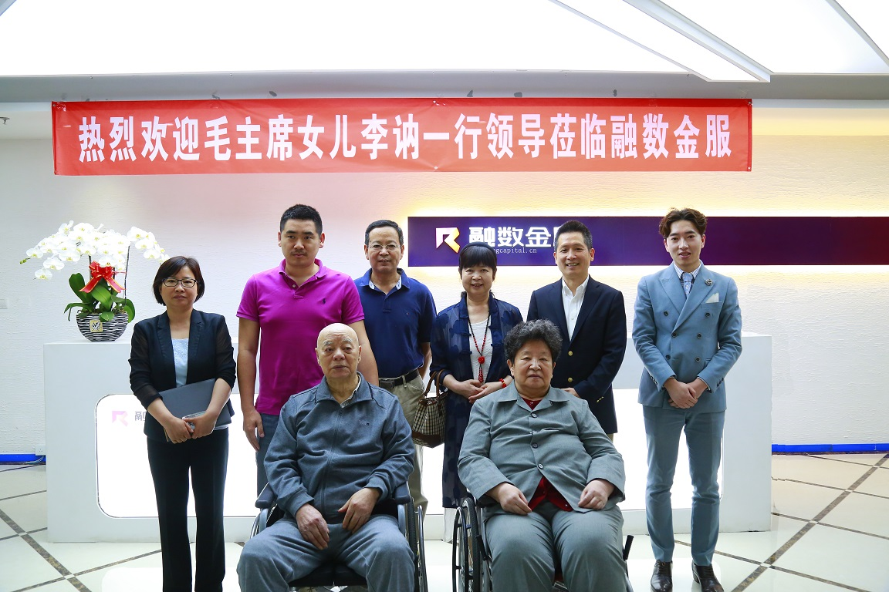
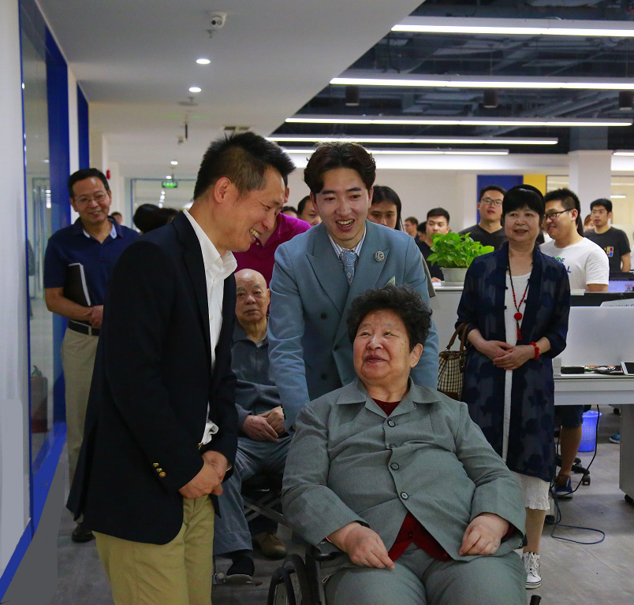
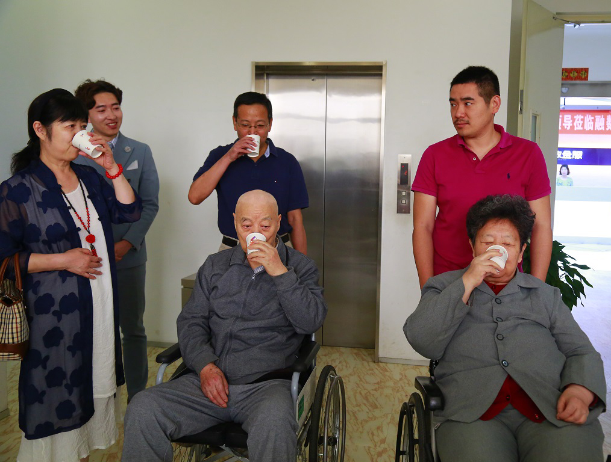
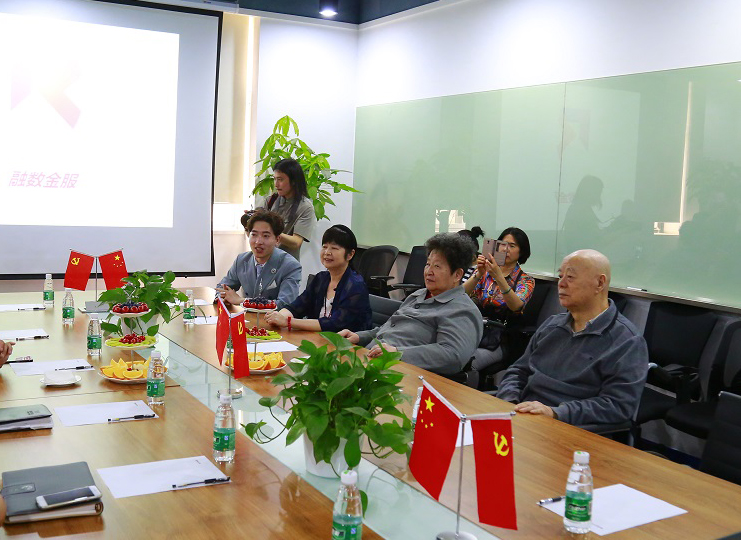

<section class="section part_bank mgtop100">
    <div class="container">
        <div class="row">
            <div class="col-md-12 col-sm-12 col-xs-12">
                <div class="new__shadow newsInfoWrap">
                    <h4>以“红色”之义，任重道远--毛主席女儿李讷夫妇一行领导莅临北京融数金服访问考察</h4>
                    <div class="new__shadow__ftcol">2017-05-04</div>
                    <div>
                        <p>【序：2017年5月4日，毛泽东女儿李讷、毛泽东女婿、中国红色文化国际交流促进会会长王景清、毛泽东侄女、湖南省政协委员毛小青、中共中央办公厅毛主席纪念堂管理局领导一行莅临位于兆维产业园的北京融数金服访问参观。】</p>
                        <p>暖暖的阳光在青葱的草坪上折射出刚刚好的熠影。在这里，三三两两，生机勃然的青年者，也许因为突然的灵感驻足引发的一场思维碰撞；或因为一时遇到的问题出现的踌躇踱步。。。年轻的身影，激昂的语调，因专注而不修边幅的斗志，这样的场景仿似校园，却甚是充满着机会的魅惑，无法自拔。这里，是位于酒仙桥兆维产业园的常态情景，俨然已成为了众多青年者们创业博弈的战场，挑战与机遇并存。</p>
                        <div class="imgWrap">
                            
                            <div class="text-center new__shadow__ftcol">摄于兆维工业园园区内</div>
                        </div>
                        <p>今天，正值“五.四”青年运动98周年，北京融数金服信息服务有限公司（以下简称“融数金服”）迎来了几位特殊的客人。</p>
                        <p>“都是年轻人，创业好啊！现在正是你们发挥的时代啊。政策好，环境好，机遇好，你们要好好把握。”毛主席女儿李讷走进兆维产业园北京融数金服时如是说道。</p>
                        <p>5月4日，毛泽东女儿李讷、毛泽东女婿、中国红色文化国际交流促进会会长王景清、毛泽东侄女、湖南省政协委员毛小青、中共中央办公厅毛主席纪念堂管理局领导一行莅临位于兆维产业园的北京融数金服访问参观。</p>
                        <p>兆维工业园集团党委书记叶晨清、副总裁王兴兰、北京融数金服CEO迟毓华、副总裁王宏皓热情接待并全程陪同。</p>
                        <div class="imgWrap">
                            
                            <div class="text-center new__shadow__ftcol">毛主席女儿李讷夫妇、毛主席侄女毛小青（第二排右三）与兆维工业园、北京融数金服领导合影留念</div>
                        </div>
                        <div class="imgWrap">
                            
                            <div class="text-center new__shadow__ftcol">北京融数金服CEO迟毓华向李讷夫妇介绍融数金服</div>
                        </div>
                        <p>北京融数金服CEO迟毓华向李讷夫妇一行领导介绍到，北京融数金服自2015年开始布局互联网金融生态产业链条，下辖融数数据、融数征信、融数钱包，在融资租赁及保险行业均有布局。同时融数拥有大量的行业数据信息和先进的数据分析模型，用于对接资金平台和交易双方，基于支付场景、进行授信，综合考虑贷款者的消费行为数据和其它数据源，提供完整而有效的大数据放贷解决方案。专注于向优质的中小微企业客户提供全方位、专业、定制化的金融服务，是一家基于场景支付和多维度数据源分析，对客户形成即时、主动、快捷的审核后，向合格的贷款者提供完整而有效的大数据解决方案的新型金融服务公司。随后，迟总在参观中向来宾分别介绍了由金融、风险管理、互联网及企业经营等领域的高精人士组成的高管团队</p>
                        <p>兴许，第一次近距离接触，第一次亲耳跟随李讷奶奶的回忆，听到那些之前止于书籍里“红色”故事，第一次从李奶奶讲述中感受延安精神、“五.四”精神，感受历史革命文化对我们现在与未来的重要意义。种种感动促动着青年创业者们充满热血的爱国心、斗志心。</p>
                        <p>随后，部分青年创业者代表向李讷奶奶一行领导做了创业项目的路演汇报。</p>
                        <h5>咖啡香的延续，再迎新<h5>
                        <p>在融数金服副总裁王宏皓的介绍下，李讷夫妇、毛小青一行领导来到融数金服咖啡创业项目团队区域，创业代表向一行领导热情洋溢地介绍了创业咖啡项目及未来规划。年逾七旬的李讷奶奶听得饶有兴致，情不自禁端起一杯咖啡品尝。李讷奶奶同样认为，“喝咖啡”已不仅是一个单纯的行为，它的市场发展潜力不可小觑。实现创业，从谈资源到落地合作，实现就业，从推广到销售，每一步都会从一杯咖啡开始，细节决定成败这话是没错的，喝咖啡这个细小行为往往会被忽略，而咖啡馆也正是为创业者搭建交流平台和衔接项目资本对接的地方。中关村创业大街很多年轻创业者获得不错的创业效果，他们成功的经验是我们今天融数金服的青年创业者可以学习借鉴的；当然也有很多的挫折困难，不要怕，折腾折腾，吸取经验教训，总归会成功的。你们看，今天咱们融数金服的这个创业咖啡项目是不错的，咖啡创业很有潜力，刚刚听了你们创业者的创业想法，很好。”</p>
                        <div class="imgWrap">
                            
                            <div class="text-center new__shadow__ftcol">李讷夫妇、毛小青品尝创业咖啡</div>
                        </div>
                        <h5>优越的创业办公环境，青年们肩负责任更大</h5>
                        <p>在前往第二个创业项目区域参观的路途中，当李讷夫妇看到优越的智能化办公环境时，感慨如果毛主席及其他的老革命家们能看到今天咱们中国翻天覆地的变化，青年创业者们在如此好的环境下创业实现理想，会特别欣慰的。</p>
                        <p>李讷同创业者聊天时说道，“现在创业办公环境很好，年轻人们要努力为国家创造更多的财富，吃苦在前，享受在后，不能被糖衣炮弹甜化了青年们应有的斗志，青年兴则国家兴，有一颗为人民服务的心，你们肯定行的！”</p>
                        <h5>融数数据北京研发中心 金融风控 大数据征信</h5>
                        <p>随后，李讷夫妇一行领导来到会议厅，听取融数数据北京研发中心团队负责人王东介绍融数数据研发中心团队及目前针对大数据征信而具有代表性的两个平台 -- 基于大数据湖理念构建的大数据平台Chorus以及提升IT研发、运营质量和效率的DevOps。</p>
                        <p>融数数据北京研发中心成立于2016年初，是一支以80后和90后为主的青年创业团队，团队核心成员来自亚马逊、IBM、京东、美团等国内外知名互联网公司，该团队致力于打造融数数据完整的技术体系、构建竞争技术壁垒，并立足自身的产品能力、技术优势以及服务于企业客户的咨询能力等优势，通过企业咨询和项目实施等方式帮助企业客户提升效率、业务创新。</p>
                        <p>Chorus平台基于大数据湖泊理念构建，充分利用开源软件，并在开源软件的技术上进行了深度的改造和定制，提供了从数据源层到数据应用层、从数据管理到应用开发的一站式数据平台解决方案。通过可视化的编排框架，解决了数据湖获取、治理、感知以及技术等诸多问题，Chorus将数据湖的很多功能自动化，包括数据采集和摄取、数据转换和归并、数据分析、数据管理等一系列的功能，并通过可视化的工具提供了面向分析人员、业务人员以及数据科学家的工作平台，从而突破了大数据的IT属性，提供更加便捷的数据洞察能力。同时该平台服务下衍生的数据资产亦具备高质高效的对外数据开放能力，进而在金融风控、大数据征信等领域为企业级用户提供针对企业本身的个性化定制的优质解决方案。</p>
                        <p>而另一代表技术平台是融数数据的DevOps。致力于突破业务、研发和运维之前的鸿沟，通过敏捷文化的打造、自动化工具的提供、高度数据化的衡量标准，帮助企业级客户提升业务交付能力、形成端到端的分析，从而促进企业整个IT流程的改进，更好地支撑企业战略目标；逐步形成业务价值的交付管道，从而帮助企业将IT变为企业真正的能力，实现IT敏捷到业务敏捷的转变。将助力中小、微企业快速引进新技术，为企业提供稳定、安全、便捷的IT服务，节约成本增加资源，提供有效的协作解决方案，促进企业形成自身具有竞争力的良性闭环生态链，从而支撑企业内部生态结构，同时该平台服务下衍生的数据资产亦具备高质高效的对外数据开放能力。</p>
                        <p>王东向各位领导介绍到，融数数据的Chorus平台和DevOps平台作为目前研发中心的重点研发技术，将在今年供给侧改革政策下，发挥出更大的科技技术效力，为金融服务，为更多中小企业实体经济服务。</p>
                        <p>李讷夫妇一行领导听完融数数据研发中心自主研发的大数据成果，给予年轻团队高度肯定，随即也谈到：“咱们的研发成果希望能积极响应供给侧改革政策，为更多实体经济、中小微企业服务，做到真正的金融服务。科技造就金融，从互联网到科技技术的引进，金融行业未来的发展是非常让人期待的，在这个过程里，是需要我们青年同志们还要不断的钻研，不断的突破，有突破才有创新，有创新才能引领行业，国家的未来需要你们继续努力。”</p>
                        <div class="imgWrap">
                            
                            <div class="text-center new__shadow__ftcol">北京融数金服副总裁王宏皓向李讷夫妇、毛小青介绍融数数据研发中心研发成果</div>
                        </div>
                        <p>以“红色”之义，仁道重远。此次李讷夫妇一行来访北京融数金服企业，以点击面，对青年创业者或青年员工们是一种从内至外的文化熏陶。看到青年者们的热情、吃苦拼搏精神，没有忘本，没有忘记传承的精神文化，这让李讷奶奶感动。同时，因正值五四青年节，李讷在鼓励创业的同时也赋予了青年者们更深厚的信任和责任。青年是国家发展的核心力量，有朝气、有激情、有梦想，如习主席之前提到“青年兴则国家兴，青年强则国家强。”，创业中会有很多糖衣炮弹，保持高尚品格，不被不良思想腐化，诚信为先，保持善良本性，勿以私欲为首，勇于创新创造，敢于吃苦，相信你们一定会获得成功的。</p>
                    </div>
                </div>
            </div>
        </div>
    </div>
</section>